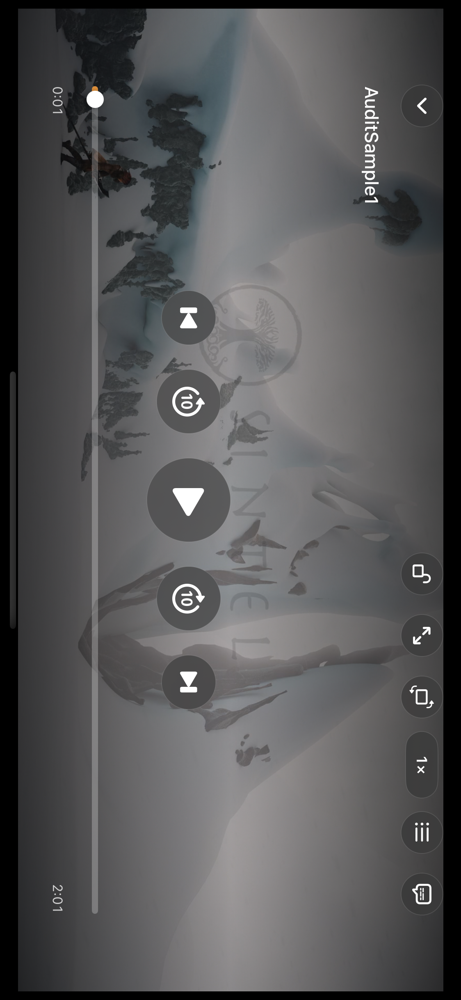
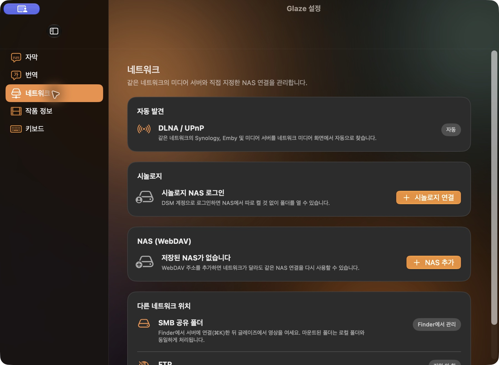
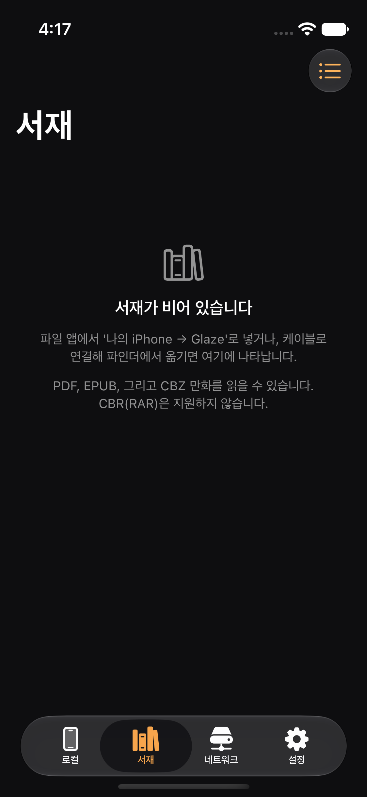
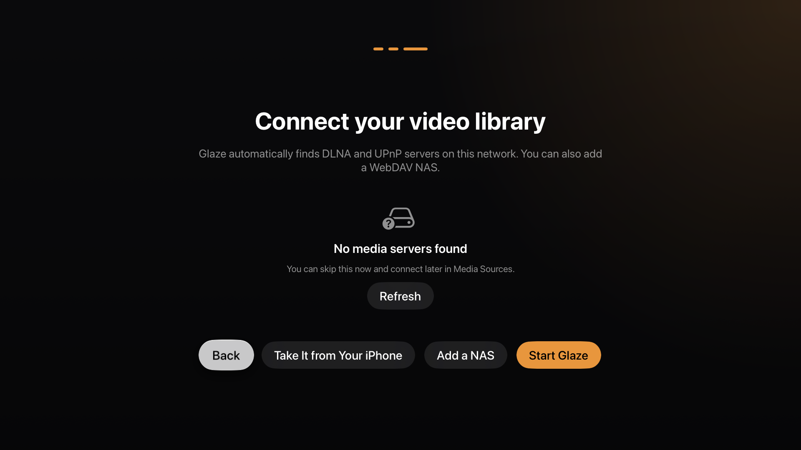

GLAZE / 01
나의 영상과 책,
하나의 글레이즈.
iOS·iPadOS 앱 심사 중. 영상 감상과 독서를 먼저 선보입니다.
ONE VIDEO. EVERY STEP.
목소리가 자막이 되고,
나의 감상으로 이어지도록.
스크롤하며 자막이 만들어지는 흐름을 살펴보세요.
0:00
Apple Silicon Mac
인터랙티브 기능 시연 · 준비된 예시 자막 사용 · 실제 AI 처리 속도와 무관

GLAZE / 04
파일이 있는 곳으로.
바로 연결.
Synology DSM · WebDAV · DLNA/UPnP
연결 방법 알아보기 ↗SMB는 Mac의 Finder에서 연결해 이용합니다.
GLAZE / 06
한 장면 다음엔,
한 페이지.
iPhone과 iPad에서 EPUB · PDF · 만화까지.
실제 앱 서재 · iPhone 18 Pro 비율 목업
GLAZE / 07
집에 도착하면,
더 큰 화면으로.
Apple TV에서 서버에 연결하고, 나의 영상을 감상하세요.
WHAT COMES NEXT
손 안에서 먼저.
나의 라이브러리와 함께 확장됩니다.
iOS·iPadOS를 시작으로 순차 출시합니다. 심사와 플랫폼별 준비 상황에 따라 일정이 달라질 수 있습니다.
- 01 · APP STORE 심사 중
iOS · iPadOS
iPhone과 iPad에서 나의 영상과 자막을 감상하고, 책을 읽습니다.
- 02 · 다음 출시
macOS
Apple Silicon의 온디바이스 음성 인식과 자막 번역을 제공합니다.
- 03 · MAC 출시 이후
Apple TV
거실의 큰 화면에서 나의 라이브러리를 감상합니다.
Apple 밖으로도 이어질 계획입니다.
Windows 시스템의 GPU 기반 자막 처리와 Android 감상 서비스도 준비할 계획입니다. 현재 출시된 기능이 아닌 향후 서비스 로드맵이며, 지원 하드웨어·범위·일정은 확정 후 안내합니다.